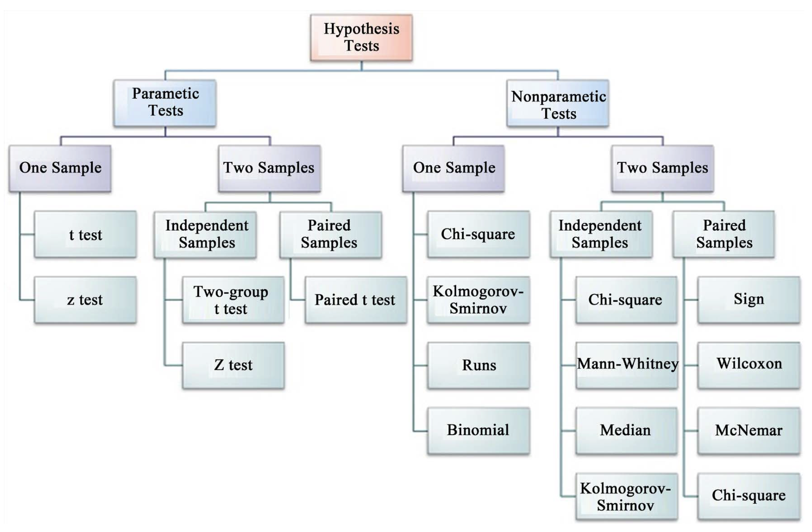
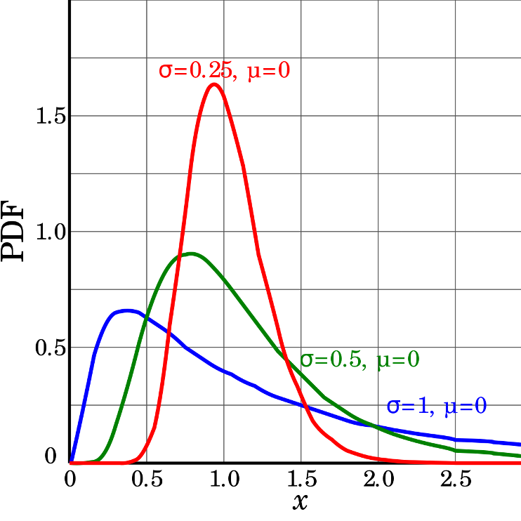
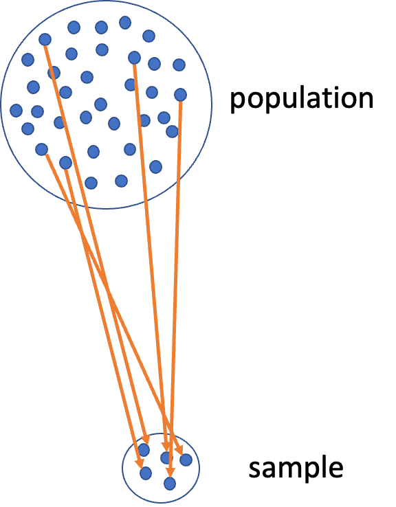
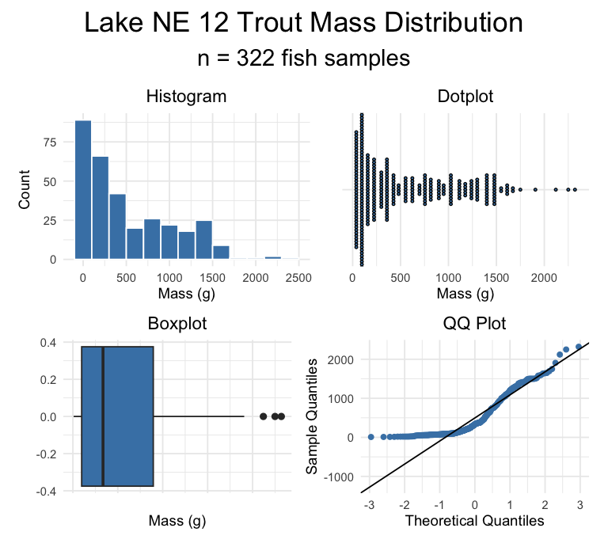
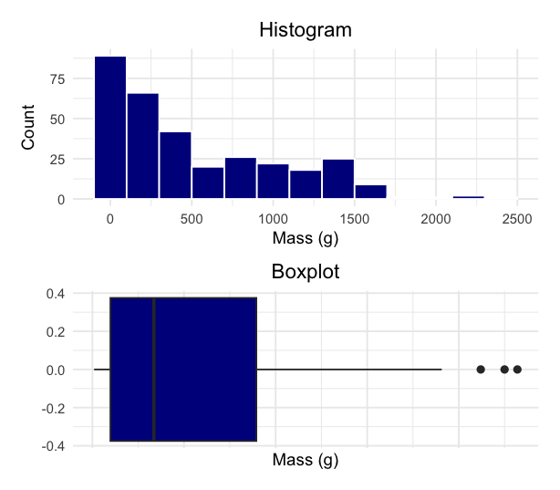
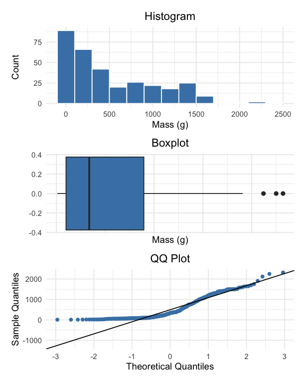
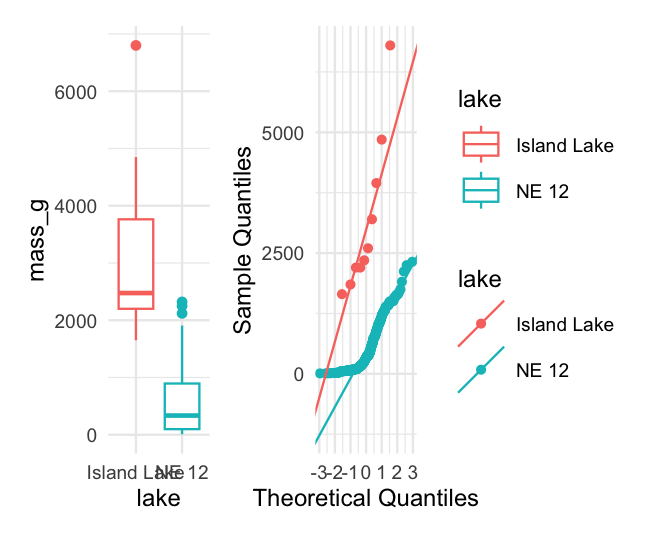
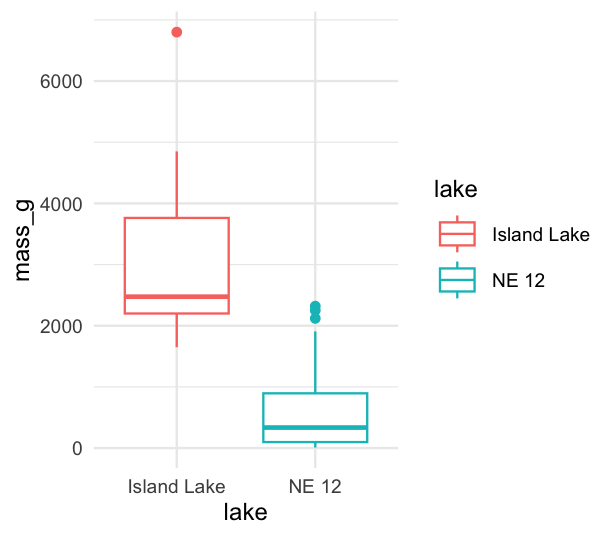

# Load libraries
library(car) # For diagnostic tests
library(patchwork)
library(tidyverse) # For data manipulation and visualizationLecture: Non-Parametric T-Tests
Rank-based tests
Mean comparison
Nonparametric
Assumptions of parametric tests, data transformations, Welch’s t-test, rank-based tests (Mann-Whitney), and permutation tests when assumptions fail — on the lake trout dataset.
Where We Left Off
A brief review:
- Hypotheses
- One- and two-sided t-tests
- Power — what it is and why we talk about it
- Assumptions of parametric tests
- What next — when assumptions fail!
- we will always cover parametric tests first
- then non-parametric approaches
- later, other approaches use the appropriate underlying distribution when it isn’t normal, but Poisson or other
Note
✅ Key idea from last lecture
A t-test’s p-value is only trustworthy if its assumptions hold. Today is about what to do when they don’t.

Today’s Overview
What we will cover today:
- What are the assumptions again, and how do you assess them?
- What to do when assumptions fail:
- Robust tests
- Rank-based tests
- Permutation tests
Let’s work with the lake trout data, as the weights are pretty cool and the assumptions may or may not hold. This easily translates to any of the other data frames you might want to use.

Part 1 · Setting Up Our Analysis
Setting Up Our Analysis
lt_df <- read_csv("data/lake_trout.csv")
head(lt_df)# A tibble: 6 × 5
sampling_site species length_mm mass_g lake
<chr> <chr> <dbl> <dbl> <chr>
1 I8 lake trout 515 1400 I8
2 I8 lake trout 468 1100 I8
3 I8 lake trout 527 1550 I8
4 I8 lake trout 525 1350 I8
5 I8 lake trout 517 1300 I8
6 I8 lake trout 607 2100 I8
Tip
🖐 Notice
Six lakes’ worth of trout: sampling_site, species, length_mm, mass_g, lake.
Calculating the Mode
# I had accidentally asked you to do mode in HW2 without
# telling you how... here is one approach
lt_df %>%
filter(!is.na(mass_g)) %>%
group_by(lake, mass_g) %>%
summarise(count = n(), .groups = "drop_last") %>%
arrange(desc(count)) %>%
slice(1) %>%
select(-count) %>%
rename(mode_mass = mass_g)# A tibble: 6 × 2
# Groups: lake [6]
lake mode_mass
<chr> <dbl>
1 I8 1000
2 Island Lake 2200
3 N 01 1000
4 NE 12 90
5 NE 14 1150
6 Toolik 340
Note
📖 New pattern
R has no built-in mode() function for statistical mode — this group_by() + count + slice(1) pattern is the standard workaround.
Part 2 · Assumptions of Parametric Tests
Parametric vs. Non-Parametric Tests
T-tests are parametric tests.
- Parametric tests:
- specify/assume the probability distribution the parameters came from
- basic assumptions of parametric t-tests: random sampling, normality, equal variance (or Welch’s t-test), no outliers
- Non-parametric tests: no assumption about the probability distribution/normality
- Mukasa et al. 2021, DOI: 10.4236/ojbm.2021.93081
Note
📖 Reference
Whitlock & Schluter, Analysis of Biological Data, Ch. 13 — Handling Violations of Assumptions, is the core reference for this whole lecture.

Assumptions of Parametric Tests — Overview
- If a parametric test’s assumptions are violated, the test becomes unreliable
- This is because the test statistic may no longer follow the distribution it’s supposed to
- Most parametric tests are robust to mild/moderate violations of normality

Assumptions — Random Sampling
Basic assumptions of parametric t-tests: random sampling, normality, equal variance, no outliers.
Random sampling:
- samples are randomly collected from populations; part of experimental design
- necessary for sample → population inference

Assumptions — Normality Testing
Note
🔮 Predict first: We’re about to look at histogram, dotplot, boxplot, and QQ-plot views of the same NE 12 mass data. Which of the four do you expect to be most convincing about normality?
Let’s test normality for one lake — NE 12 — as if we were going to run a one-sample t-test. We need a new data frame with only NE 12 data, called ne12_data.
Normality: samples from a normally distributed population
- Graphical tests: histograms, dotplots, boxplots, QQ-plots
- “Formal” tests: Shapiro-Wilk test — sometimes not useful

Shapiro-Wilk Test for Normality
“Null hypothesis is that data is normally distributed.”
- Normality: samples from a normally distributed population
- Graphical tests: histograms, dotplots, boxplots, QQ-plots
- “Formal” tests: Shapiro-Wilk test — sometimes not useful
Shapiro-Wilk normality test
data: ne12_data$length_mm
W = 0.94528, p-value = 1.56e-09Testing the Equal Variance Assumption
Equal variance: samples are from populations with a similar degree of variability.
- Graphical tests: boxplots
- “Formal” tests: F-ratio test
- When sample sizes are equal, parametric tests are most robust to violations of normality — less so for equal variance

Testing for Outliers
No outliers: no “extreme” values very different from the rest of the sample.
- Graphical tests: boxplots, histograms
- “Formal tests”: Grubbs’ test — no one really does this
Warning
⚠️ Watch out!
Outliers are a problem for non-parametric tests as well — switching to a rank-based test doesn’t make an outlier stop mattering.

Part 3 · When Assumptions Fail
Alternative Tests When Assumptions Fail
What if t-test assumptions fail? Alternative tests, with more relaxed assumptions, are available. In which case would you use each?
- Welch’s t-test: distribution normal but variance unequal
- Mann-Whitney-Wilcoxon test: distribution not normal and/or outliers present (but both groups should still have similar distributions and ~equal variance)
- Permutation test for two samples: distribution not normal (but both groups should still have similar distributions and ~equal variance)

Understanding QQ-Plots
QQ-plots: a tool for assessing normality.
- On x: theoretical quantiles from a standard normal distribution
- On y: ordered sample values
- Deviation from normal can be detected as deviation from a straight line

Data Transformations
In some cases, data can be mathematically “transformed” to meet the assumptions of parametric tests. This can be done in R and usually involves:
- log₁₀ transformations
- square root transformations
- and many others
Part 4 · Welch’s T-Test
Robust Tests — Welch’s T-Test
Welch’s t-test:
- a common “robust” test for the means of two populations
- robust to violation of the equal-variance assumption; deals better with unequal sample sizes
- still a parametric test (assumes normal distribution)
- calculates a t statistic, but recalculates degrees of freedom based on sample sizes and s

Comparing Standard T-Test vs. Welch’s T-Test
Let’s compare a parametric t-test to a Welch’s t-test:
- Standard:
t.test(y1, y2, var.equal = TRUE, paired = FALSE) - Welch’s:
t.test(y1, y2, var.equal = FALSE, paired = FALSE)
[1] "Standard t-test results for mass_g:"
Two Sample t-test
data: mass_g by lake
t = 14.181, df = 330, p-value < 2.2e-16
alternative hypothesis: true difference in means between group Island Lake and group NE 12 is not equal to 0
95 percent confidence interval:
2266.304 2996.360
sample estimates:
mean in group Island Lake mean in group NE 12
3165.0000 533.6677 [1] "Welch's t-test results for mass_g:"
Welch Two Sample t-test
data: mass_g by lake
t = 5.1368, df = 9.0578, p-value = 0.0006016
alternative hypothesis: true difference in means between group Island Lake and group NE 12 is not equal to 0
95 percent confidence interval:
1473.676 3788.989
sample estimates:
mean in group Island Lake mean in group NE 12
3165.0000 533.6677 Part 5 · Rank-Based Tests
Rank-Based Tests
Rank-based tests: no assumptions about distribution (non-parametric).
- Ranks of data: observations are assigned ranks; sums (and signs, for paired tests) of ranks for groups are compared
- Mann-Whitney U test — common alternative to the independent-samples t-test
- Wilcoxon signed-rank test — alternative to the paired t-test
- Assumptions: similar distributions for groups, equal variance
- Less power than parametric tests
- Best when normality can’t be met by transformation (weird distribution) or there are large outliers
Note
📖 Reference
Whitlock & Schluter, Ch. 13, covers the Mann-Whitney U test and Wilcoxon signed-rank test as the standard rank-based alternatives.
Mann-Whitney U Test Results
[1] "Mann-Whitney U test results mass_g:"
Wilcoxon rank sum test with continuity correction
data: mass_g by lake
W = 3205.5, p-value = 9.506e-08
alternative hypothesis: true location shift is not equal to 0
Tip
🖐 Notice
The test statistic is W, not t — a signal you’re reading rank-based test output, not a t-test.
Part 6 · Permutation Tests
Permutation Tests — Concept
- Permutation tests are based on resampling: reshuffling the original data
- Resampling allows parameter estimation when the distribution is unknown, including SEs and CIs of statistics (means, medians)
- A common approach is the bootstrap: resample with replacement many times, recalculate sample stats
- We use the
permpackage - H₀: µ_A = µ_B, Hₐ: µ_A ≠ µ_B
- Calculates the difference Δ in means between two groups

Permutation Tests — Method
- Randomly reshuffle observations between groups (keeping n₍NE 12₎ = 323 and n₍Island₎ = 10), calculate Δ
- Repeat > 1,000 times
- Record the proportion of the differences in means as extreme as (or more extreme than) observed
- This is equivalent to a p-value, and can be used in the “traditional” hypothesis-testing framework
Tip
🖐 For a graphical explanation
Permutation Test Implementation
In R, using the perm package. Assumptions: both groups have a similar distribution; equal variance.
library(perm)
ne12_perm_data <- isl_ne12_df %>%
filter(lake == "NE 12") %>%
pull(length_mm)
# Randomly sample exactly 25 observations from NE 12
set.seed(123)
ne12_perm_data <- sample(ne12_perm_data, size = 25, replace = FALSE)
island_perm_data <- isl_ne12_df %>%
filter(lake == "Island Lake") %>%
pull(length_mm)
observed_diff <- mean(ne12_perm_data, na.rm = TRUE) - mean(island_perm_data, na.rm = TRUE)permTS(ne12_perm_data, island_perm_data,
alternative = "two.sided",
method = "exact.mc",
control = permControl(nmc = 10000))
Exact Permutation Test Estimated by Monte Carlo
data: GROUP 1 and GROUP 2
p-value = 2e-04
alternative hypothesis: true mean GROUP 1 - mean GROUP 2 is not equal to 0
sample estimates:
mean GROUP 1 - mean GROUP 2
-333.08
p-value estimated from 10000 Monte Carlo replications
99 percent confidence interval on p-value:
0.000000000 0.001059383 Part 7 · Summary
Summary — Testing Assumptions
Key assumptions:
- Random sampling — samples are randomly collected from populations
- Normality — data follows a normal distribution
- Equal variance — samples come from populations with similar variability
- No outliers — no extreme values that can skew results
Note
Assessing assumptions
- Key to do every time
- Should be acknowledged in the manuscript
Summary — Data Transformations
When assumptions aren’t met, transformations may help normalize data:
- Log transformation:
log10(x)— useful for right-skewed data, multiplicative effects - Square root:
sqrt(x)— useful for count data, moderately right-skewed distributions - Box-Cox: a more flexible family of power transformations
- More specialized transformations exist, especially for percentages or proportions
Tip
🖐 Recall
We saw log10() shrink the gap between the NE 12 and Island Lake boxplots earlier — that’s the transformation working.
Summary — Parametric Test Options
1. Standard t-test
Strengths:
- High statistical power when assumptions are met
- Well understood and widely accepted
Weaknesses:
- Sensitive to violations of normality, equal variance
- Heavily influenced by outliers
2. Welch’s t-test
Strengths:
- Robust to violations of the equal-variance assumption
- Handles unequal sample sizes well
- Still parametric (assumes normality)
Weaknesses:
- Slightly less powerful than the standard t-test when variances are equal
- Still assumes a normal distribution
Summary — Non-Parametric Options
3. Mann-Whitney-Wilcoxon test
Strengths:
- Non-parametric: doesn’t assume normal distribution
- Robust against outliers
- Works with ordinal data
Weaknesses:
- Less statistical power than parametric tests
- Still assumes similar distributions and approximately equal variance
- Tests median differences rather than mean differences
4. Permutation tests
Strengths:
- Distribution-free: doesn’t assume a specific distribution
- Can be applied to many types of test statistics
- Handles small sample sizes well
- Directly estimates p-values through resampling
Weaknesses:
- Computationally intensive
- Assumes exchangeability under the null hypothesis
- Requires similar distributions and equal variance
Key Takeaway
Statistical tests have different strengths and assumptions. The choice should be guided by your data’s characteristics, not just convenience.
Always visualize your data before deciding on the appropriate test.
Note
✅ Key idea
Standard t-test → Welch’s → Mann-Whitney/Permutation isn’t a strict ladder of “better” tests — each answers a slightly different question (means vs. medians) under different assumptions. Pick based on what your data actually looks like.